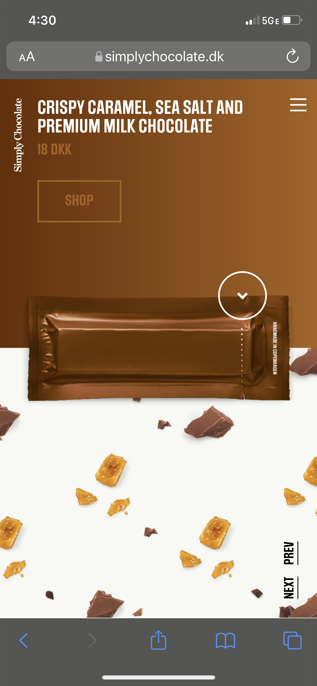

Visual Hierarchy
Simply Chocolate
www.simplychocolate.dk

Visual Hierarchy is used to rank design elements and influence in the order you want your users to view them. This is achieved by using principles like contrast, scale, balance and, more, you can help establish each element in its rightful place and help the most important elements stand out. Visual hierarchy can play a key role in the planning how information isarchitectured to help users navigate through your product easier and faster. UX design is all about removing friction and enhancing usability for a product, and paying attention to visual hierarchy is a key way to do this.
Proximity
Amazon
www.dhttps://m.media-amazon.com/images/I/61Kfud-MclL._AC_SL1500_.jpg
Amazon’s 1-click buy is a great example of Hick’s law. It is convinient and helps reduce the number of perceived options on screen makes the interface more user friendly. This makes it more likely that the user will accomplish the goal and not give up or get overwhelmed throughtout their shopping experience. Breaking down choices to a series of too many small chunks can also cause the user to drop off before reaching the goal which is to have a quick and easy adjustment from selecting a product to checking out the cart.
White Space
Apple Computer
https://www.apple.com/mac//en
White space is the area between design elements. It is also the space within individual design elements, including the space between typography glyphs (readable characters). Despite its name, white space does not need to be white. It can be any color, texture, pattern, or even a background image. This helps create a relationship that helps keep the website user friendly and promotes balance and rhythm.